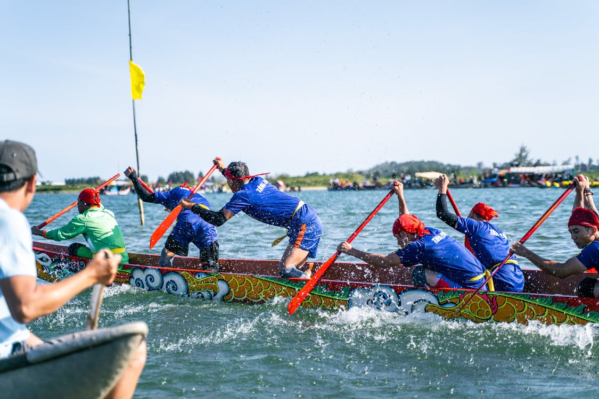

With the Ottawa Dragon Boat Festival coming up this June, it is time to get race-ready - not just with your paddles, but with your body too. Whether you are a seasoned paddler or jumping in for the first time, here are a few must-do's and definite don'ts to stay safe and strong on the water.
Do's: Setting Yourself Up for a Strong Race
- Warm up thoroughly with dynamic stretches before hitting the water. Dragon boat paddling is an explosive, full-body effort. Cold muscles are more prone to strains, especially in the shoulders and lower back. Spend at least 5 minutes on arm circles, torso rotations, and leg swings before you get in the boat.
- Focus on core activation and shoulder mobility. Your power in paddling comes from your core, not just your arms. A few minutes of planks, dead bugs, or cat-cow stretches before practice can help engage the right muscles and protect your shoulders from overuse.
- Stay hydrated and maintain good posture while paddling. It is easy to forget about water intake when you are sitting in a boat, but dehydration increases fatigue and injury risk. And posture matters - hunching forward puts extra strain on your neck and lower back with every stroke.
- Listen to your body - soreness is normal, sharp pain is not. Muscle soreness after a hard paddle is expected, especially early in the season. But sharp, sudden, or worsening pain is your body telling you something is wrong. Do not push through it.
Don'ts: Common Mistakes That Lead to Injury
- Skip your cool down or post-race stretch. After the adrenaline wears off, your muscles tighten up fast. Take 5-10 minutes to stretch your shoulders, chest, hip flexors, and forearms. Your body will thank you the next morning.
- Ignore nagging pain in your shoulders, back, or wrists. Paddling is repetitive, and repetitive strain builds up over time. A small ache that you ignore during training can become a serious issue by race day. Get it assessed early.
- Jump back into training after a race day without recovery time. Your muscles need time to repair. Racing back-to-back days or jumping into an intense practice the day after a race increases your risk of overuse injuries.
- Rely solely on self-treatment for aches and strains. Foam rolling and stretching at home are great, but they have limits. A professional can identify the root cause of your pain and address it before it sidelines you.
Post-Race Recovery Matters
The repetitive nature of paddling can strain your upper body, particularly the shoulders, neck, and lower back. If you are feeling tight or fatigued after practice or race day, do not wait - early assessment and care can prevent longer-term issues.
Common paddling-related complaints include rotator cuff irritation, upper back stiffness, wrist and forearm tension, and lower back pain from the rotational demands of each stroke. These are all treatable, and the sooner you address them, the faster you get back on the water. In the meantime, a massage ball can help release tight spots in your shoulders and upper back, and a hot or cold pack can ease post-race soreness while you wait for your next appointment.
Before and After the Festival
A visit to your physiotherapist, chiropractor, or massage therapist can help optimize performance and support recovery. Pre-event sessions can improve mobility and prep your body for peak performance, while post-event treatments can ease muscle tension and reduce injury risk.
- Physiotherapy - Identify movement imbalances, strengthen weak areas, and build a paddling-specific warm-up routine tailored to your body.
- Massage Therapy - Release tight muscles in your shoulders, chest, and forearms. Regular sports massage between practices keeps your muscles responsive and reduces recovery time.
- Chiropractic Care - Optimize joint alignment in your spine and shoulders so your body can handle the rotational demands of paddling more efficiently.
These services work best together, helping you stay injury-free, bounce back faster, and perform at your full potential through the festival and beyond.
Tools Mentioned in This Article
- Foam Roller - For post-paddle muscle recovery and self-massage
- Massage Ball - For releasing tight spots in shoulders and upper back
- Hot/Cold Pack - For easing post-race soreness and inflammation
Disclosure: As an Amazon Associate, I earn a small commission from qualifying purchases made through the links above. As a healthcare professional, I am not endorsing or promoting these specific products. The items mentioned are general suggestions based on what may be helpful for the topics discussed in this article. Readers should do their own research and due diligence before purchasing any product. You are free to find and purchase similar products from any supplier of your choice - this will not affect your access to the content on this site or any physiotherapy services.
Stay Strong on the Water This June
Whether you are training with your dragon boat team, racing at the festival, or just getting back into paddling this season, Jumana Khambatwala is a Registered Physiotherapist in Ottawa and Limoges, ON ready to help you paddle stronger, recover smarter, and stay injury-free all summer long.
Book a Session